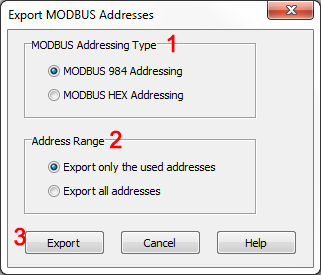

Topic: CL197

| Export MODBUS Addresses |
Topic: CL197
|
Use the Export feature to Export the MODBUS Addresses into a CSV file. You can open the CSV file with another software like ExcelTM.

1 MODBUS Addressing Type: Select the MODBUS Addressing Type you use.
2 Address Range: You can Export only the MODBUS Addresses used in the CLICK project or all of the MODBUS Addresses that the CLICK PLC supports.
3 Export: By clicking this button, the ‘Save AS’ window opens. You can edit the CSV file name and change the folder location to store the CSV file if necessary.